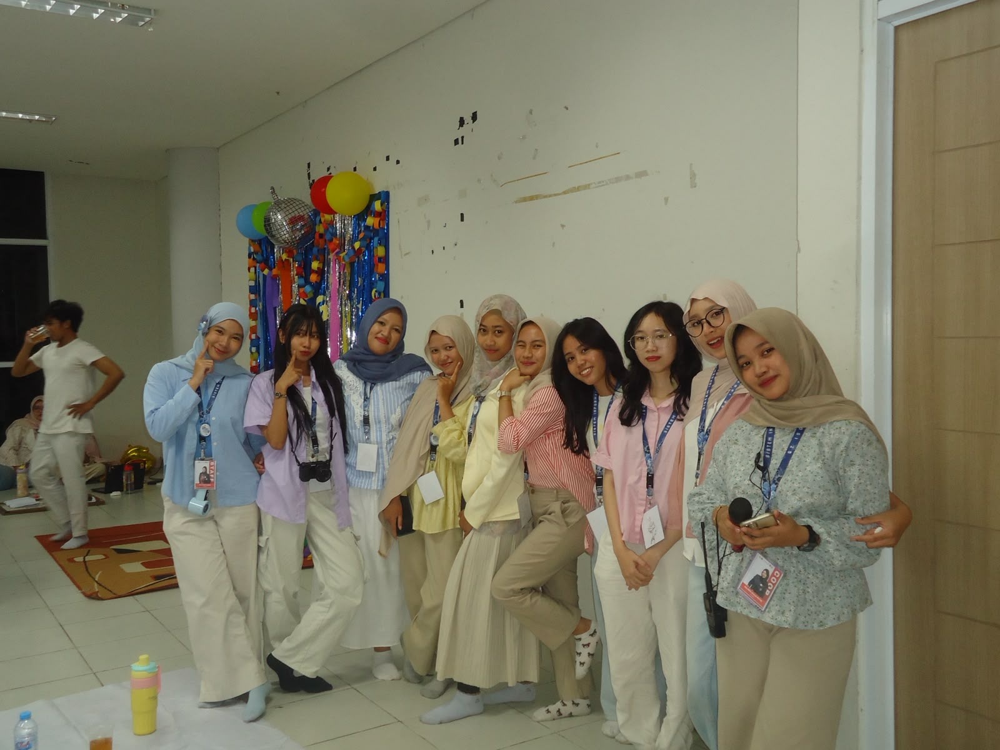
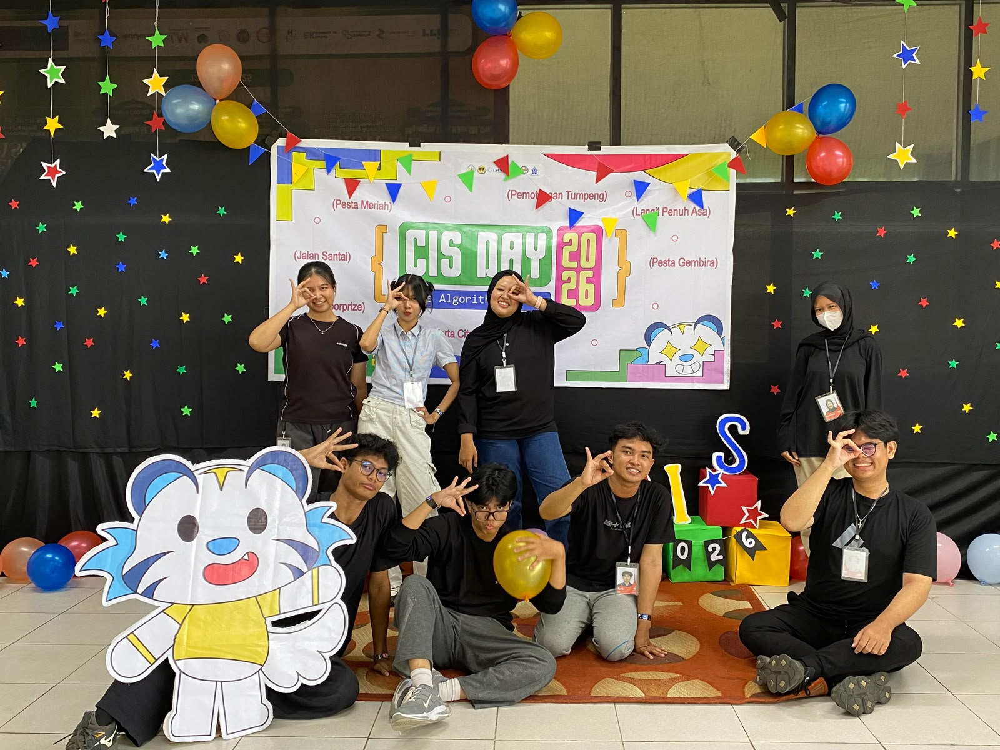
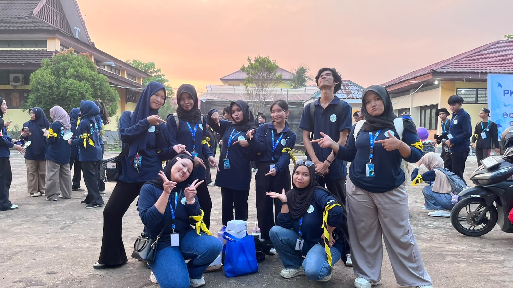
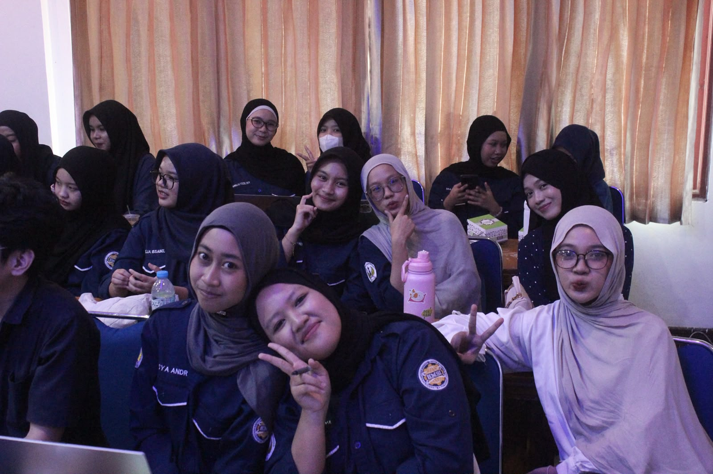
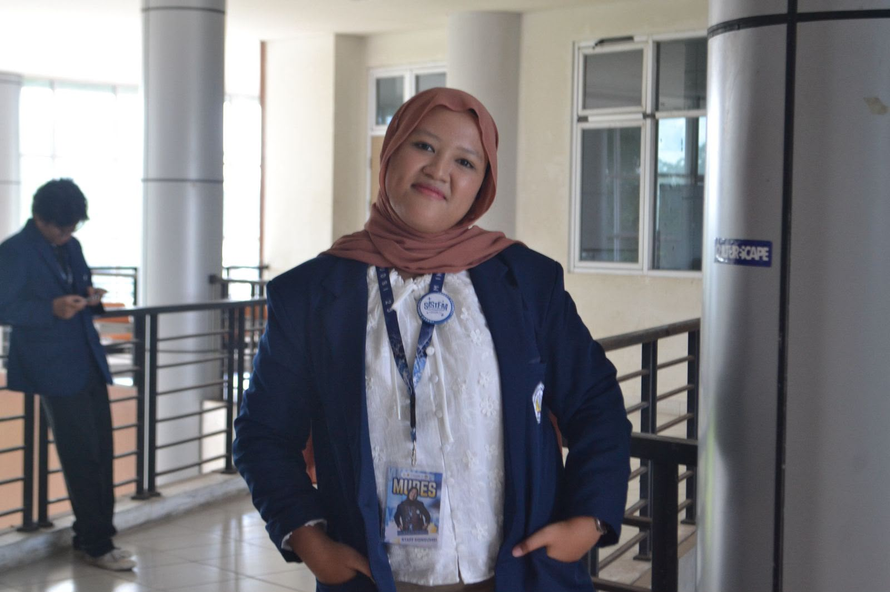

System Information Gathering
Momen kepanitiaan pertama yang saya ikuti di kampus bersama teman-teman baru dan mendapatkan pengalaman baru.
ABOUT ME
Mengenal lebih dekat tentang saya, aktivitas, dan beberapa pengalaman yang pernah saya jalani.
Saya merupakan mahasiswa Prodi Sistem Informasi Universitas Tanjungpura, yang saat ini sedang menempuh semester 3. Saya masuk Sistem Informasi melalui jalur SNBT, alasannya karena saya tertarik dengan dunia teknologi dan ingin mempelajari lebih dalam mengenai pengembangan sistem informasi.
Selama menjalani perkuliahan, saya sangat senang mengikuti kepanitiaan dan organisasi, karena hal tersebut memberikan pengalaman berharga dalam bekerja sama dengan orang lain, mengembangkan kemampuan komunikasi, dan membangun jejaring.
Motto hidup saya adalah "Jika MIMPI nya besar, maka USAHA nya gak boleh kecil" Saya percaya bahwa dengan memiliki mimpi yang besar, kita akan terdorong untuk berusaha lebih keras dan tidak mudah menyerah dalam menghadapi tantangan.
Terus mencoba hal baru di bidang teknologi.
Mengubah ide menjadi sebuah karya.
Mengembangkan kemampuan melalui pengalaman.
MY MOMENTS
Beberapa foto dan momen yang memiliki cerita tersendiri bagi saya.

Momen kepanitiaan pertama yang saya ikuti di kampus bersama teman-teman baru dan mendapatkan pengalaman baru.

Kepanitiaan kedua yang saya ikuti yaitu CIS (Celebration Information System) yang merupakan kegiatan tahunan dari Prodi Sistem Informasi.

PKKMB Samudra merupakan kepanitiaan yang paling berkesan menurut saya, karena di kepanitiaan ini saya bisa bekerja sama dengan prodi lain untuk menyukseskan kegiatan ini.

Studi Banding HMSI dan HIMASI merupakan kegiatan yang berkesan juga bagi saya, karena bisa mempertemuka dan menjalin hubungan dengan mahasiswa dari fakultas lain yang memiliki minat dan tujuan yang sama.

Menjadi Panitia Musyawarah Besar HMSI memberikan banyak pengalaman dan pembelajaran yang berharga bagi saya, karena pada kegiatan ini saya jadi mengetahui cara kerja sebuah organisasi.